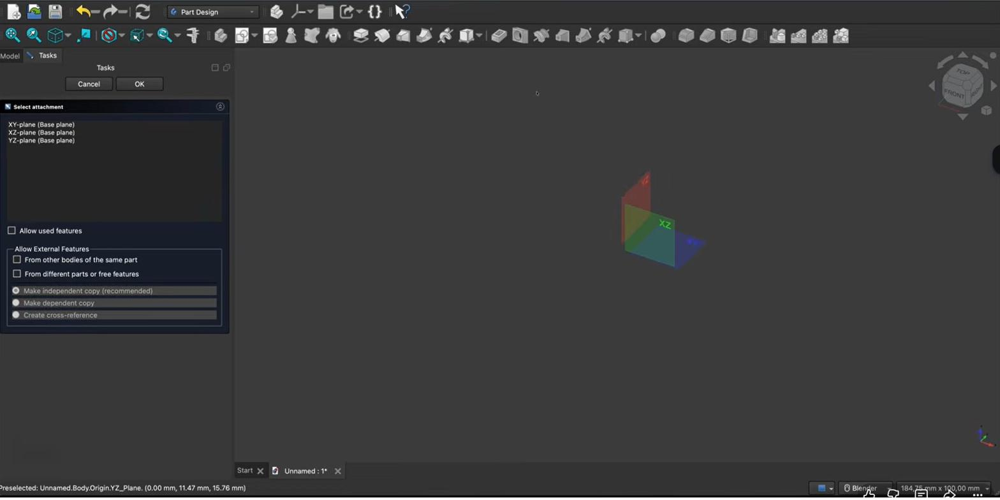
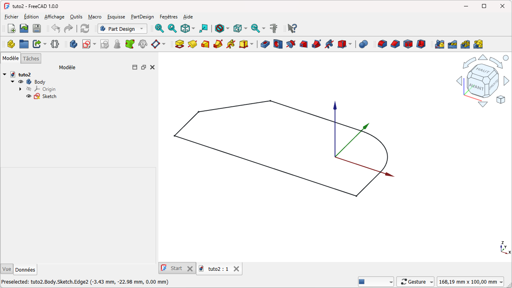

Je eerste schets (Sketcher)Votre premier croquis (Sketcher)Your first sketch (Sketcher)
Elke vaste vorm in FreeCAD begint als een platte tekening: een schets. In dit hoofdstuk open je de Sketcher, teken je je eerste vorm op een vlak, en leer je het belangrijkste onderscheid van de hele cursus: het verschil tussen geometrie en constraints. We tekenen meteen de voetafdruk van ons eerste behuizingsbakje.Toute forme solide dans FreeCAD commence par un dessin plat : un croquis. Ici, vous ouvrez le Sketcher, dessinez votre première forme sur un plan et découvrez la distinction clé du cours : géométrie vs contraintes. Nous traçons l'empreinte de notre premier boîtier.Every solid in FreeCAD starts as a flat drawing: a sketch. Here you open the Sketcher, draw your first shape on a plane, and learn the key distinction of the whole course: geometry vs constraints. We immediately draw the footprint of our first enclosure box.
- een schets starten op een gekozen vlakdémarrer un croquis sur un plan choisistart a sketch on a chosen plane
- basisvormen tekenen (lijn, rechthoek, cirkel)dessiner des formes de base (ligne, rectangle, cercle)draw basic shapes (line, rectangle, circle)
- het verschil tussen geometrie en constraints uitleggenexpliquer la différence entre géométrie et contraintesexplain the difference between geometry and constraints
- een gesloten contour maken die klaar is voor een 3D-vormcréer un contour fermé prêt pour une forme 3Dmake a closed contour ready for a 3D shape
Workbench: kies linksboven in de werkbankkiezer (dropdown) de workbench Part Design. Zodra je een schets bewerkt, schakelt FreeCAD vanzelf naar de Sketcher; links verschijnt het Taken-paneel.Atelier : en haut à gauche, choisissez Part Design dans le sélecteur d'atelier. En éditant un croquis, FreeCAD passe au Sketcher ; le panneau Tâches apparaît à gauche.Workbench: top-left, pick Part Design in the workbench selector. Editing a sketch switches FreeCAD to the Sketcher; the Tasks panel appears on the left.
Commando: Part Design → Body maken en daarna Part Design → Schets maken. Elk commando is ook een werkbalk-icoon — zweef erover voor naam en sneltoets.Commande : Part Design → Créer un corps puis Part Design → Créer une esquisse. Chaque commande est aussi une icône (survol = nom + raccourci).Command: Part Design → Create body then Part Design → Create sketch. Each is also a toolbar icon (hover = name + shortcut).
- Werkbank → Part Design.Atelier → Part Design.Workbench → Part Design.
- Klik Body maken (container voor je onderdeel).Cliquez Créer un corps.Click Create body.
- Klik Schets maken; kies een vlak (XY = bovenaanzicht) → OK.Cliquez Créer une esquisse ; plan XY → OK.Click Create sketch; plane XY (top view) → OK.
- Teken in de Sketcher met de geometrie-werkbalk.Dessinez dans le Sketcher.Draw in the Sketcher.
- Klaar? Sluiten bovenaan het Taken-paneel.Terminé ? Fermer.Done? Close (top of Tasks).

01Een schets startenDémarrer un croquisStarting a sketch
Een schets hoort altijd in een Body en op een vlak. We werken in de werkbank Part Design, maken (of gebruiken) een Body, en starten dan een nieuwe schets. FreeCAD vraagt op welk vlak: voor de bodem van ons bakje kiezen we het XY-vlak (het bovenaanzicht uit hoofdstuk 3). Daarna schakelt het scherm in de schetsmodus: je kijkt recht op het vlak en de teken- en constraint-knoppen verschijnen.Un croquis appartient à un Body et à un plan. Dans Part Design, on crée (ou utilise) un Body puis un nouveau croquis. FreeCAD demande le plan : pour le fond de notre boîtier, le plan XY (la vue de dessus du chapitre 3). L'écran passe en mode esquisse : vue de face sur le plan, avec les outils de dessin et de contraintes.A sketch belongs to a Body and a plane. In Part Design you create (or use) a Body, then a new sketch. FreeCAD asks for the plane: for our box's bottom we pick the XY plane (the top view from chapter 3). The screen then switches to sketch mode: you look straight at the plane and the drawing and constraint tools appear.

- PDActiveer de werkbank Part Design en maak een Body (of gebruik de bestaande).Waarom: een schets moet ergens "in" leven; de Body is de container van je toekomstige bakje.Activez Part Design et créez un Body.Pourquoi : un croquis doit vivre dans un Body, le conteneur du futur boîtier.Activate Part Design and create a Body.Why: a sketch must live inside a Body — the container of your future box.
- SKKlik op Schets maken en kies het XY-vlak.Waarom: XY is het bovenaanzicht; zo ligt de bodem van je bakje horizontaal.Cliquez sur Créer un croquis et choisissez le plan XY.Pourquoi : XY est la vue de dessus ; le fond reste horizontal.Click Create sketch and choose the XY plane.Why: XY is the top view, so the box bottom lies flat.
- SKFreeCAD schakelt in de schetsmodus (je kijkt recht op het vlak).Waarom: zo teken je nauwkeurig in 2D, zonder dat het perspectief je misleidt.FreeCAD passe en mode esquisse (vue de face).Pourquoi : dessiner précisément en 2D, sans perspective trompeuse.FreeCAD enters sketch mode (face-on view).Why: draw precisely in 2D without misleading perspective.
02Geometrie tekenen: lijn, rechthoek, cirkelDessiner : ligne, rectangle, cercleDrawing: line, rectangle, circle
In de schetsmodus kies je een tekengereedschap en plaats je punten met linkermuisklikken. Met de rechthoek klik je twee tegenoverliggende hoeken; met de cirkel klik je het middelpunt en sleep je de straal; met de lijn klik je begin- en eindpunt. Een gereedschap blijft actief tot je het annuleert: klik rechts of druk Esc. Voor onze bodem tekenen we een rechthoek — de voetafdruk van de printplaat.En mode esquisse, choisissez un outil et placez des points par clics gauches. Le rectangle : deux coins opposés ; le cercle : centre puis rayon ; la ligne : début et fin. L'outil reste actif jusqu'à annulation : clic droit ou Échap. Pour le fond, on trace un rectangle — l'empreinte du circuit.In sketch mode, pick a tool and place points with left clicks. The rectangle: two opposite corners; the circle: centre then radius; the line: start and end. A tool stays active until cancelled: right-click or Esc. For our bottom we draw a rectangle — the footprint of the PCB.
Een tekengereedschap herhaalt zichzelf: na één rechthoek staat het klaar voor de volgende. Klik rechts of druk Esc om te stoppen — vergeet dat niet, anders teken je per ongeluk extra vormen.Un outil se répète : après un rectangle, il en attend un autre. Clic droit ou Échap pour arrêter.A tool repeats: after one rectangle it's ready for the next. Right-click or Esc to stop.
03Het kernidee: geometrie ≠ constraintsL'idée clé : géométrie ≠ contraintesThe key idea: geometry ≠ constraints
Een schets bestaat uit twee soorten dingen. Ten eerste de geometrie: de echte lijnen, rechthoeken en cirkels die je tekent. Ten tweede de constraints: de regels die je aan die geometrie oplegt — "deze lijn is horizontaal", "deze twee zijden zijn even lang", "dit hoekpunt ligt op de oorsprong", of een maat zoals "80 mm". Geometrie is wat je ziet; constraints zijn de afspraken die de vorm vastleggen.Un croquis comporte deux types d'éléments. D'abord la géométrie : les lignes, rectangles et cercles réels. Ensuite les contraintes : les règles imposées — « cette ligne est horizontale », « ces deux côtés sont égaux », « ce point est sur l'origine », ou une cote « 80 mm ». La géométrie se voit ; les contraintes fixent la forme.A sketch has two kinds of things. First the geometry: the actual lines, rectangles and circles you draw. Second the constraints: the rules you place on that geometry — "this line is horizontal", "these two sides are equal", "this point is on the origin", or a dimension like "80 mm". Geometry is what you see; constraints pin the shape down.
Zolang een schets nog niet volledig met constraints is vastgelegd, kun je de vorm met de muis nog verslepen — hij is dan nog niet volledig vastgelegd. Dat is normaal in het begin. In het volgende hoofdstuk maken we de schets volledig bepaald, zodat elke maat muurvast ligt.Tant qu'un croquis n'est pas entièrement contraint, on peut encore le déformer à la souris — il est « sous-contraint ». C'est normal au début. Au chapitre suivant, on le rend entièrement contraint.Until a sketch is fully constrained, you can still drag the shape with the mouse — it's "under-constrained". That's normal at first. In the next chapter we make it fully constrained, so every dimension is locked.
Teken eerst ruw de geometrie, leg daarna de vorm vast met constraints. Die twee stappen apart houden, is dé sleutel tot nette, wijzigbare modellen.Dessinez d'abord la géométrie, puis fixez-la par des contraintes. Séparer ces deux étapes est la clé de modèles propres et modifiables.Draw the rough geometry first, then lock the shape with constraints. Keeping those two steps separate is the key to clean, editable models.
Deze rechthoek is geen oefening voor niets: het is de voetafdruk van je PCB-bakje. In hoofdstuk 6 trekken we hem omhoog tot een echte bak. Meet dus straks je eigen printplaat op — die maten gebruiken we verderop.Ce rectangle n'est pas un exercice gratuit : c'est l'empreinte de votre boîtier. Au chapitre 6, on l'extrude en boîte réelle. Mesurez votre circuit.This rectangle isn't a throwaway exercise: it's the footprint of your PCB box. In chapter 6 we extrude it into a real box. So measure your own PCB.
Tijdens het tekenen: rechtsklik annuleert het huidige commando, een sleep-kader selecteert meerdere elementen tegelijk, Delete verwijdert de selectie, en D start een maat. De volledige lijst staat op de sneltoetsen-spiekfiche.En dessinant : clic droit annule, cadre sélectionne plusieurs éléments, Delete supprime, D lance une cote. Liste complète : aide-mémoire.While drawing: right-click cancels the current command, a box selects several elements, Delete removes, and D starts a dimension. Full list: shortcuts cheat sheet.
Maak een Body, start een schets op het XY-vlak en teken één rechthoek ter grootte van een printplaat (richtwaarde bv. 80 × 50 mm — pas aan jouw PCB aan). Klik rechts om het gereedschap te stoppen en sluit de schetsmodus. De rechthoek hoeft nog niet exact op maat — dat doen we in H05.Créez un Body, un croquis sur le plan XY, et tracez un rectangle de la taille d'un circuit (p. ex. 80 × 50 mm). Clic droit pour arrêter, puis fermez le mode esquisse.Create a Body, start a sketch on the XY plane, and draw one rectangle the size of a PCB (e.g. 80 × 50 mm). Right-click to stop, then close sketch mode.
04Veelgemaakte foutenErreurs fréquentesCommon mistakes
- Op het verkeerde vlak tekenen. Controleer dat je op XY zit (bovenaanzicht); anders staat je bakje straks verkeerd in de ruimte.Mauvais plan. Vérifiez XY (dessus), sinon le boîtier sera mal orienté.Drawing on the wrong plane. Check you're on XY (top); otherwise the box ends up misoriented.
- De contour niet sluiten. Een open lijnenketen kan later geen vaste vorm worden. Een rechthoek is altijd gesloten — bij losse lijnen let je hierop.Contour non fermé. Une chaîne ouverte ne peut pas devenir un solide. Le rectangle est fermé d'office.Not closing the contour. An open chain can't become a solid later. A rectangle is always closed.
- Geometrie en constraints door elkaar halen. Tekenen plaatst geometrie; regels/maten zijn constraints. We leggen ze in H05 op.Confondre géométrie et contraintes. Dessiner = géométrie ; règles/cotes = contraintes (H05).Mixing up geometry and constraints. Drawing places geometry; rules/dimensions are constraints (H05).
05Samenvatting
Een schets leeft in een Body op een vlak (XY voor de bodem). Je tekent geometrie (lijn/rechthoek/cirkel) met linkerklikken en stopt een gereedschap met rechtsklik/Esc. Bovenop de geometrie komen constraints: de regels en maten die de vorm vastleggen. Onze rechthoek wordt de voetafdruk van het PCB-bakje.Un croquis vit dans un Body sur un plan (XY pour le fond). On dessine la géométrie et on la fixe par des contraintes. Notre rectangle = l'empreinte du boîtier.A sketch lives in a Body on a plane (XY for the bottom). You draw geometry and lock it with constraints. Our rectangle becomes the PCB box footprint.
- Schets = geometrie (vormen) + constraints (regels/maten).Croquis = géométrie + contraintes.Sketch = geometry + constraints.
- Eerst tekenen, dan vastleggen. Rechtsklik/Esc stopt een gereedschap.Dessiner puis fixer. Clic droit/Échap arrête l'outil.Draw first, then lock. Right-click/Esc stops a tool.
- Een vaste vorm vereist een gesloten contour.Un solide exige un contour fermé.A solid needs a closed contour.